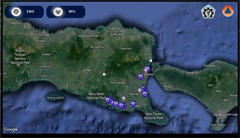
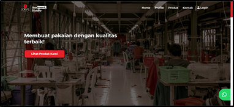
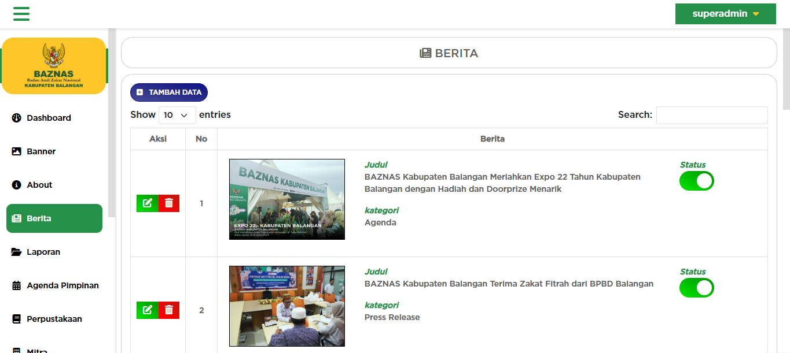
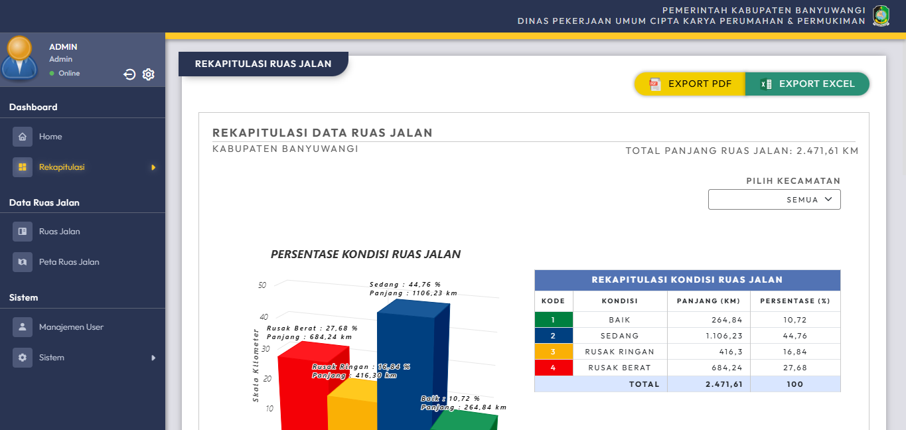

Lulusan Teknologi Rekayasa Perangkat Lunak dari Politeknik Negeri Banyuwangi dengan minat yang mendalam di bidang Fullstack Development. Memiliki keahlian dalam Front-end dan Back-end Development serta telah menyelesaikan berbagai proyek pengembangan web
Saya adalah seorang Web Developer & Programmer dengan minat dan dedikasi tinggi dalam dunia pengembangan perangkat lunak. Saya memiliki pengalaman dalam merancang dan membangun berbagai aplikasi web, baik dari sisi front-end maupun back-end.
Saya memiliki semangat tinggi dalam mempelajari hal baru dan mengembangkan solusi digital yang efisien serta user-friendly. Dengan latar belakang pendidikan di bidang Teknologi Rekayasa Perangkat Lunak, saya siap berkontribusi dalam tim maupun proyek individu.
| Nama | : | Rizal Eka Budi Pratama |
| Tanggal Lahir | : | 21 Maret 2002 |
| Umur | : | 24 Tahun |
| No HP | : | 0859-3615-5999 |
| : | rizalekabp@gmail.com | |
| Alamat | : | Banyuwangi, Jawa Timur |
Komitmen saya adalah terus berkembang dan memberikan kontribusi nyata dalam dunia digital. Saya percaya bahwa teknologi dapat menjadi solusi efektif untuk banyak tantangan sehari-hari, dan saya ingin menjadi bagian dari perubahan tersebut.
Lulus dengan gelar Sarjana Terapan Komputer, yang memberikan dasar pemahaman yang kuat dalam berbagai aspek teknologi informasi, termasuk pengembangan perangkat lunak, perancangan dan manajemen sistem basis data, serta arsitektur dan keamanan web. Memiliki wawasan mendalam tentang metodologi pengembangan perangkat lunak modern, optimasi sistem, serta penerapan prinsip keamanan dalam infrastruktur teknologi. Dengan latar belakang akademik yang komprehensif, mampu merancang, mengembangkan, dan mengelola sistem berbasis web yang efisien, scalable, dan sesuai dengan kebutuhan industri.

Aplikasi Android TV untuk menampilkan peringatan dini tsunami secara real-time, terintegrasi dengan sistem monitoring BMKG, dirancang untuk memberikan notifikasi cepat dan visualisasi peta bencana.

Platform digital untuk CV Lokal Industri dalam mengelola pemesanan konveksi, dilengkapi fitur input desain, manajemen stok bahan, serta integrasi notifikasi otomatis via WhatsApp.

Platform digital yang dikembangkan untuk Baznas Kabupaten Balangan guna memfasilitasi pengajuan dan verifikasi donasi listrik masjid, sistem administrasi, dan fitur manajemen data masjid secara online.

Aplikasi web untuk menampilkan informasi kondisi jalan di Kabupaten Banyuwangi secara visual dan interaktif, mencakup peta lokasi, jenis kerusakan, dan status perbaikan.